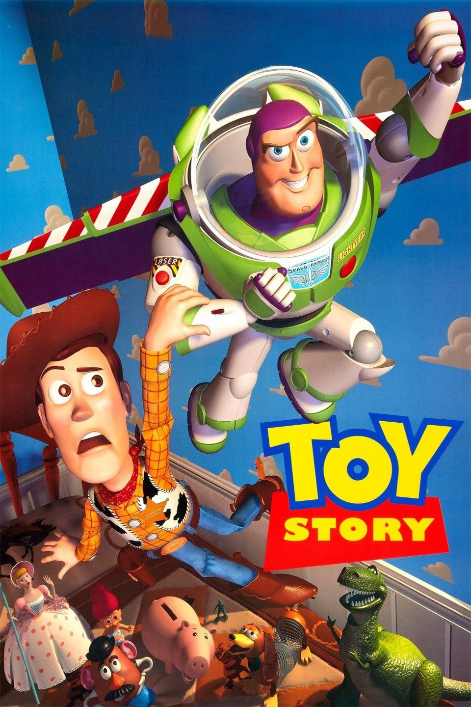

Ingressos online
|  | O aniversário do garoto Andy está chegando e seus brinquedos ficam nervosos, temendo que ele ganhe novos brinquedos que possam substituí-los. Liderados pelo caubói Woody, o brinquedo predileto de Andy, eles recebem Buzz Lightyear, o boneco de um patrulheiro espacial, que logo passa a receber mais atenção do garoto. Com ciúmes, Woody tenta ensiná-lo uma lição, mas Buzz cai pela janela. É o início da aventura do caubói, que precisa resgatar Buzz para limpar sua barra com os outros brinquedos. TREILER DO FILME |
| A história de um herói escocês do século 13, chamado William Wallace, que lidera seus conterrâneos contra o monarca inglês Edward I, após ter sofrido uma tragédia pessoal causada pelos soldados ingleses. O exército amador de Wallace foi maior que o exército da Inglaterra. TREILER DO FILME |
|
|
Uma família mafiosa luta para estabelecer sua supremacia nos Estados Unidos depois da Segunda Guerra Mundial. Uma tentativa de assassinato deixa o chefão Vito Corleone incapacitado e força os filhos Michael e Sonny a assumir os negócios. TREILER DO FILME |